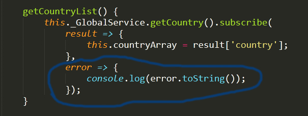
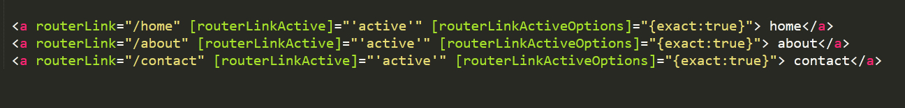
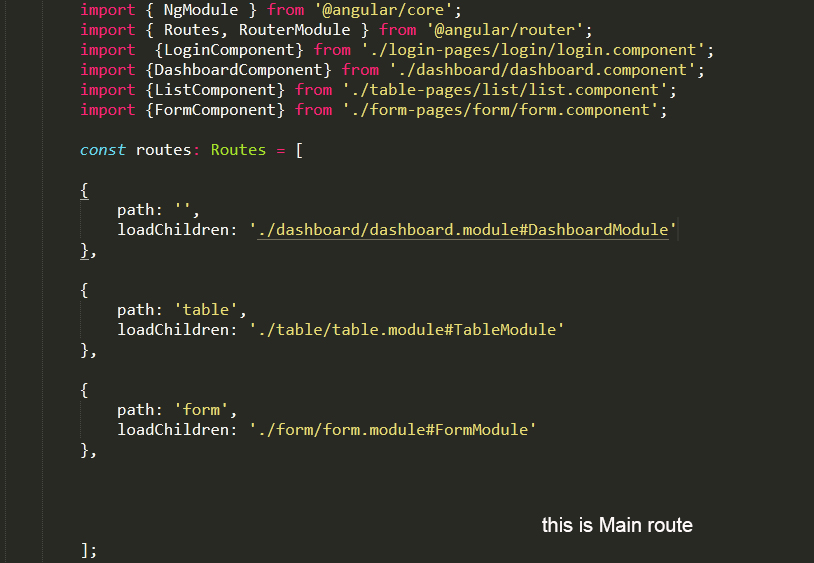

Angular
What is Angular?
Angular is a TypeScript-based open-source web application framework, developed and maintained by Google. It offers an easy and powerful way of building front end web-based applications.
explain the various features of Angular ?
There are several features of Angular that makes it an ideal front end JavaScript framework.
Accessibility Applications
Animation Support
Cross-Platform App Development
Code Generation
Code Splitting
Discuss the advantages and disadvantages of using Angular?
Following are the various advantages of using Angular:
Ability to add a custom directive
Exceptional community support
Facilitates client and server communication
Features strong features, such as Animation and Event Handlers
Follows the MVC pattern architecture
Offers support for static template and Angular template
Support for two-way data-binding
Supports dependency injection, RESTful services, and validations
Disadvantages of using Angular are enumerated as follows:
Complex SPAs can be inconvenient and laggy to use due to their size
Dynamic applications do not always perform well
Learning Angular requires a decent effort and time
What is TypeScript?
TypeScript is a typed superset of JavaScript created by Microsoft that adds optional types, classes, async/await, and many other features, and compiles to plain JavaScript.
Explain Angular Authentication and Authorization ?
The user login credentials are passed to an authenticate API, whether user logined or not it will check.
Post logging-in successfully, different users have a different level of access. While some may access everything, access for others might be restricted to only some resources. The level of access is authorization.
What are directives in Angular?
Directives are one of the core features of Angular
Attribute Directives
Component Directives
Structural Directives
Please explain the difference between Angular and AngularJS?
| AngularJS | Angular |
|---|---|
| It is based on MVC architecture | This is based on Service/Controller |
| This uses use JavaScript to build the application | Introduced the typescript to write the application |
| Based on controllers concept | This is a component based UI approach |
| Not a mobile friendly framework | Developed considering mobile platform |
| Difficulty in SEO friendly application development | Ease to create SEO friendly applications |
What are the key components of Angular
Components, Data Binding, Dependency Injection (DI), Directives, Metadata, Modules, Routing, Services, Template
What are the differences between Component and Directive?
In a short note, A component(@component) is a directive-with-a-template.
| Component | Directive |
|---|---|
| To register a component we use @Component meta-data annotation | To register directives we use @Directive meta-data annotation |
| Components are typically used to create UI widgets | Directive is used to add behavior to an existing DOM element |
| Component is used to break up the application into smaller components | Directive is use to design re-usable components |
| Only one component can be present per DOM element | Many directives can be used per DOM element |
| @View decorator or templateurl/template are mandatory | Directive doesn't use View |
What is a template?
A template is a HTML view where you can display data by binding controls to properties of an Angular component. You can store your component's template in one of two places.
What is a module?
Modules are logical boundaries in your application and the application is divided into separate modules to separate the functionality of your application. Lets take an example of app.module.ts root module declared with @NgModule
Could you explain the various types of filters in Angular ?
In order to format the value of expression so that it can be displayed to the user, Angular has filters
currency – Formats a number to the currency format
date – Formats a data to some specific format
filter – Selects a subset of items from an array
json – Formats an object to a JSON string
limitTo – Limits an array or string into a specified number of characters or elements
lowercase – Formats a string to lowercase
number – Formats a number to a string
orderBy – Orders an array by an expression
What are lifecycle hooks available?
ngOnChanges, ngOnInit, ngDoCheck, ngAfterContentInit, ngAfterContentChecked, ngAfterViewInit, ngAfterViewChecked, ngOnDestroy
What is a data binding?
Data binding is a core concept in Angular and allows to define communication between a component and the DOM
What is RxJS?
RxJS (Reactive Extensions for JavaScript) is a library for reactive programming using observables that makes it easier to compose asynchronous or callback-based code.
RxJS is a library for composing asynchronous and callback-based code in a functional, reactive style using Observables.
HttpClient produce and consume RxJS Observables and also uses operators for processing observables.
For example, we can import observables and operators for using HttpClient as below,
import { Observable, throwError } from 'rxjs';
import { catchError, retry } from 'rxjs/operators';
What is an observer?
Observer is an interface for a consumer of push-based notifications delivered by an Observable. It has below structure,
what is angularjs MVC ?
MVC stands for Model View Controller. It is a software design pattern for developing web applications. It is very popular because it isolates the application logic from the user interface layer and supports separation of concerns.
Model: It is responsible for managing application data. It responds to the requests from view and to the instructions from controller to update itself.
View: It is responsible for displaying all data or only a portion of data to the users. It also specifies the data in a particular format triggered by the controller's decision to present the data. They are script-based template systems such as JSP, ASP, PHP and very easy to integrate with AJAX technology.
Controller: It is responsible to control the relation between models and views. It responds to user input and performs interactions on the data model objects. The controller receives input, validates it, and then performs business operations that modify the state of the data model.
What is the difference between promise and observable?
| Observable | Promise |
|---|---|
| Observable emits multiple values | Promise emits a single value |
| multiple responses to the same request, then we have to use Observable | while handling a HTTP request, Promise can manage a single response for the same request |
| Provides chaining and subscription to handle complex applications | Uses only .then() clause |
how to Optimize Angular application ?
While build time we need to run (--prod) then it will optimize application
what is activatedroute in angular
Provides access to information about a route associated with a component that is loaded in an outlet.
What is subscribing?
when Observable publishing data that time only subscribes to it. by calling the subscribe() method

How can you read full response?
using the observe property and specifying the response value. This way Angular will hand you the full HttpResponse object.
How do you perform Error handling?
If the request fails on the server or failed to reach the server due to network issues then HttpClient will return an error object instead of a successful reponse. In this case, you need to handle in the component by passing error object as a second callback to subscribe() method.

What is the purpose of base href tag?
The routing application should add element to the index.html as the first child in the tag inorder to indicate how to compose navigation URLs. If app folder is the application root then you can set the href value as below
< base href="/" >
What are the router imports?
The Angular Router which represents a particular component view for a given URL is not part of Angular Core. It is available in library named @angular/router to import required router components. For example, we import them in app module as below,
import { RouterModule, Routes } from '@angular/router';
What are router links?
The RouterLink is a directive on the anchor tags give the router control over those elements. Since the navigation paths are fixed, you can assign string values to router-link directive as below,

What is decorator ? and What are the class decorators in Angular?
Decorators are a design pattern that is used to separate modification or decoration of a class without modifying the original source code.
A class decorator is a decorator that appears immediately before a class definition, which declares the class to be of the given type, and provides metadata suitable to the type The following list of decorators comes under class decorators,
There are four main types decorator:
Class decorators, e.g. @Component and @NgModule
Property decorators for properties inside classes, e.g. @Input and @Output
Method decorators for methods inside classes, e.g. @HostListener
Parameter decorators for parameters inside class constructors, e.g. @Inject
@Pipe()
@Injectable()
@NgModule()
What are the restrictions on declarable classes?
Below classes shouldn't be declared,
A class that's already declared in another NgModule
Ngmodule classes
Service classes
Helper classes
How do you pass headers for HTTP client?
You can directly pass object map for http client or create HttpHeaders class to supply the headers.
What is lazy loading?
Lazy loading is one of the most useful concepts of Angular Routing. It helps us to download the web pages in chunks instead of downloading everything in a big bundle. It is used for lazy loading by asynchronously loading the feature module for routing whenever required using the property loadChildren.

How do you upgrade angular version?
The Angular upgrade is quite easier using Angular CLI ng update command as mentioned below.
$ ng update @angular/cli @angular/core
How do you test Angular application using CLI?
Angular CLI downloads and install everything needed with the Jasmine Test framework
You just need to run ng test to see the test results.
What are the ways to trigger change detection in Angular?
There are 3 possible ways,
ApplicationRef.tick():
NgZone.run(callback):
ChangeDetectorRef.detectChanges():
What is a provider in Angular?
A provider is a configurable service in Angular. It is an instruction to the Dependency Injection system that provides information about the way to obtain a value for a dependency.
Does Angular support nested controllers?
Yes, Angular does support the concept of nested controllers.
What is metadata?
Metadata is used to decorate a class so that it can configure the expected behavior of the class. The metadata is represented by decorators
What is Transpiling in Angular?
Transpiling in Angular refers to the process of conversion of the source code from one programming language to another.
In Angular, generally, this conversion is done from TypeScript to JavaScript.
What is a module, and what does it contain?
An Angular module is set of Angular basic building blocks like component, directives, services etc. An app can have more than one module.
What is angular CLI?
Angular CLI(Command Line Interface) is a command line interface to scaffold and build angular apps using nodejs style (commonJs) modules.
What is the difference between constructor and ngOnInit?
ypeScript classes has a default method called constructor which is normally used for the initialization purpose. Whereas ngOnInit method is specific to Angular, especially used to define Angular bindings. Even though constructor getting called first, it is preferred to move all of your Angular bindings to ngOnInit method. In order to use ngOnInit
What is a service?
HTML elements communicate to the Browser how to represent the text. They become HTML tags when enclosed within angular brackets <>.
What is dependency injection in Angular?
Dependency injection (DI), is an important application design pattern in which a class asks for dependencies from external sources rather than creating them itself. Angular comes with its own dependency injection framework for resolving dependencies( services or objects that a class needs to perform its function).So you can have your services depend on other services throughout your application.
What is the purpose of async pipe?
The AsyncPipe subscribes to an observable or promise and returns the latest value it has emitted. When a new value is emitted, the pipe marks the component to be checked for changes. Let's take a time observable which continuously updates the view for every 2 seconds with the current time.
What is the purpose of ngFor directive?
We use Angular ngFor directive in the template to display each item in the list. For example, here we iterate over list of users,
What is the purpose of ngIf directive?
Sometimes an app needs to display a view or a portion of a view only under specific circumstances.
Let's take an example to display a message if the user age is more than 18
EX:
You are not eligible for student pass!
What is interpolation?
Interpolation is a special syntax that Angular converts into property binding. It’s a convenient alternative to property binding. It is represented by double curly braces({{}}).
What are template statements?
A template statement responds to an event raised by a binding target such as an element, component, or directive.
The template statements appear in quotes to the right of the = symbol like (event)="statement".
EX :
What are pipes?
A pipe takes in data as input and transforms it to a desired output.
EX :
For example, let us take a pipe to transform a component's birthday property into a human-friendly date using date pipe.
What is a custom pipe? and examples
Apart from built-inn pipes, you can write your own custom pipe with the below key characteristics,
EX :
@Pipe({name: 'myCustomPipe'})
EX :
You can create custom reusable pipes for the transformation of existing value. For example, let us create a custom pipe for finding file size based on an extension,
What is the difference between pure and impure pipe?
A pure pipe is only called when Angular detects a change in the value or the parameters passed to a pipe. For example, any changes to a primitive input value (String, Number, Boolean, Symbol) or a changed object reference (Date, Array, Function, Object). An impure pipe is called for every change detection cycle no matter whether the value or parameters changes. i.e, An impure pipe is called often, as often as every keystroke or mouse-move.
What is a bootstrapping module?
Every application has at least one Angular module, the root module that you bootstrap to launch the application is called as bootstrapping module. It is commonly known as AppModule.
What are observables?
Observables are declarative which provide support for passing messages between publishers and subscribers in your application.
They are mainly used for event handling, asynchronous programming, and handling multiple values.
What is HttpClient and its benefits?
Most of the Front-end applications communicate with backend services over HTTP protocol using either XMLHttpRequest interface or the fetch() API.
Angular provides a simplified client HTTP API known as HttpClient which is based on top of XMLHttpRequest interface.
EX :
import { HttpClientModule } from '@angular/common/http';
Explain on how to use HttpClient with an example?
Below are the steps need to be followed for the usage of HttpClient.
Import HttpClient into root module:
Inject the HttpClient into the application: Let's create a userProfileService(userprofile.service.ts) as an example. It also defines get method of HttpClient
How do you define routes?
A router must be configured with a list of route definitions. You configures the router with routes via the RouterModule.forRoot() method, and adds the result to the AppModule's imports array.
What is the purpose of Wildcard route?
If the URL doesn't match any predefined routes then it causes the router to throw an error and crash the app. In this case, you can use wildcard route
{ path: '**', component: PageNotFoundComponent }
Do I need a Routing Module always?
No, the Routing Module is a design choice. You can skip routing Module (for example, AppRoutingModule) when the configuration is simple and merge the routing configuration directly into the companion module (for example, AppModule).
What is Angular Universal?
Angular Universal is a server-side rendering module for Angular applications in various scenarios. This is a community driven project and available under @angular/platform-server package. Recently Angular Universal is integrated with Angular CLI.
What are different types of compilation in Angular?
Angular offers two ways to compile your application,
Just-in-Time (JIT)
Ahead-of-Time (AOT)
What is JIT?
Just-in-Time (JIT) is a type of compilation that compiles your app in the browser at runtime.
JIT compilation is the default when you run the ng build (build only) or ng serve (build and serve locally) CLI commands. i.e, the below commands used for JIT compilation,
ng build
ng serve
What is AOT?
Ahead-of-Time (AOT) is a type of compilation that compiles your app at build time. For AOT compilation, include the --aot option with the ng build or ng serve command as below,
ng build --aot
ng serve --aot
What are the ways to control AOT compilation?
You can control your app compilation in two ways
By providing template compiler options in the tsconfig.json file
By configuring Angular metadata with decorators
What are the two phases of AOT?
The AOT compiler works in three phases,
Code Analysis:
Code generation
Validation
How do you describe various dependencies in angular application?
The dependencies section of package.json with in an angular application can be divided as follow,
Angular packages:
Polyfill packages
What is the purpose of common module?
The commonly-needed services, pipes, and directives provided by @angular/common module. Apart from these HttpClientModule is available under @angular/common/http.
How do you install angular language service in the project?
You can install Angular Language Service in your project with the following npm command
npm install --save-dev @angular/language-service
After that add the following to the "compilerOptions" section of your project's tsconfig.json
"plugins": [ {"name": "@angular/language-service"} ]
What are the differences of various versions of Angular 2/4/5/6/7 ?
| angular 1 / angularjs |
| Angular 1 (AngularJS) is the first angular framework released in the year 2010. • AngularJS is not built for mobile devices. • It is based on controllers with MVC architecture. |
| angular 2 |
| Angular 2 was released in the year 2016. Angular 2 is a complete rewrite of Angular1 version. • The performance issues that Angular 1 version had has been addressed in Angular 2 version. • Angular 2 is built from scratch for mobile devices unlike Angular 1 version. • Angular 2 is components based. |
| angular 4 |
| The compiler generated code file size in AOT mode is very much reduced. • With Angular 4 the production bundles size is reduced by hundreds of KB’s. • Animation features are removed from angular/core and formed as a separate package. • Supports Typescript 2.1 and 2.2. |
| angular 5 |
| Angular 5 makes angular faster. It improved the loading time and execution time. • Shipped with new build optimizer. • Supports Typescript 2.5. |
| angular 6 |
| It is released in May 2018. • Includes Angular Command Line Interface (CLI), Component Development KIT (CDK), Angular Material Package. |
| angular 7 |
| It is released in October 2018. • TypeScript 3.1 • RxJS 6.3 • New Angular CLI • CLI Prompts capability provide an ability to ask questions to the user before they run. It is like interactive dialog between the user and the CLI • With the improved CLI Prompts capability, it helps developers to make the decision. New ng commands ask users for routing and CSS styles types(SCSS) and ng add @angular/material asks for themes and gestures or animations. |